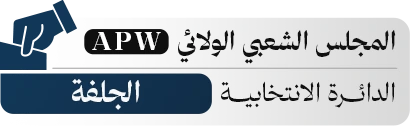
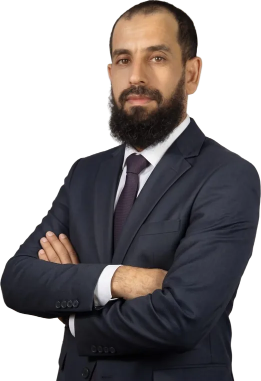
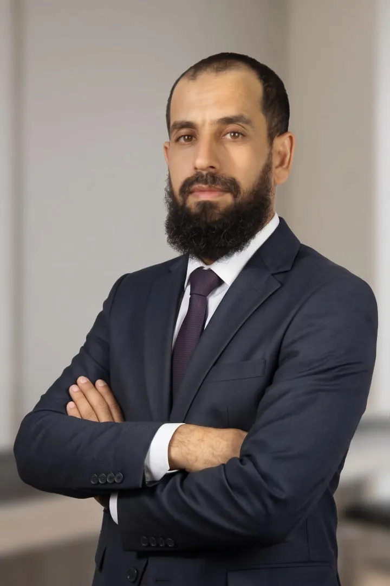
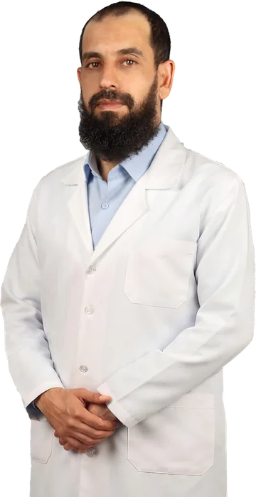

رقمنة متابعة المشاريع
رقمنة متابعة المشاريع والبرامج ذات البعد الولائي، بما يسمح بمعرفة مراحل الإنجاز والصعوبات المسجلة.


نحو مجلس شعبي ولائي رقمي في خدمة الجلفة
صوتك أقرب، ومستقبل ولايتنا أرقى.اطرح انشغالك وأبدِ رأيك مباشرةً، لنرتقي معاً بالجلفة في كل المجالات.

يوم الانتخابات28 نوفمبر 2026 · الانتخابات المحلية
رقمنة المجلس الشعبي الولائي لولاية الجلفة آليةٌ لتسريع معالجة الملفات، وتعزيز الشفافية، وتقريب الإدارة من المواطن. ومعها تواصلٌ مباشر مع خالد خاضر: لطرح الانشغالات، وإبداء الرأي، والمساهمة في الرقي بالولاية في كل المجالات.
رقمنة متابعة المشاريع والبرامج ذات البعد الولائي، بما يسمح بمعرفة مراحل الإنجاز والصعوبات المسجلة.
تطوير آليات لتلقي الانشغالات والاقتراحات المتعلقة بالقضايا ذات البعد الولائي، وتوجيهها إلى الجهات المختصة ومتابعة مآلها.
اطرح انشغالك الآننشر المعلومات المتعلقة بالمشاريع ونسب تقدمها، وفقًا للأحكام القانونية والتنظيمية المعمول بها.
من التزامات المحور الثالث في البرنامج الانتخابي «إنجاز»: الولاية الرقمية والشفافة. اقرأ المحور كاملاً
من أي بلدية في ولاية الجلفة، ومن هاتفك: صف انشغالك أو مقترحك في دقيقة، ليصل مباشرةً إلى خالد خاضر وفريقه.
الموقع لا يحفظ بياناتك في أي خادم: الرسالة تخرج من حسابك أنت.
الملصقات الرسمية، البندرول، المقولات، وطريقة الانتخاب: كلها في صفحة واحدة، قابلة للتكبير والمشاركة.
كل المستجدات والملصقات
وُلدتُ ونشأت في ولاية الجلفة، أحمل همومها وأشارك أبناءها طموحاتهم. مسيرتي لم تقتصر على قاعات التدريس، بل كانت رحلة مستمرة لطلب العلم وبناء الذات، إيماناً مني بأن خدمة مجتمعنا تبدأ بتطوير أنفسنا. أرى في الجلفة أكثر من مجرد مدينة؛ إنها مساحة للعمل والمبادرة وبناء الأجيال.
لطالما آمنت بأن الفهم العميق للواقع يتطلب تنوعاً في المعرفة. لذا، جمعت في مساري الأكاديمي بين المنطق الهندسي من خلال الماستر والليسانس في الهندسة المدنية، وبين مهارات التواصل عبر الماستر والليسانس في علوم الإعلام والاتصال. كما عززت هذا المسار بتكوينات في التسيير المالي، المناجمنت، والموارد البشرية، لأكون ملماً بأدوات التخطيط والإدارة التي يحتاجها أي عمل جاد.
منذ أكتوبر 2012، أقف يومياً أمام أبنائنا كأستاذ لمادة الرياضيات في الطور المتوسط. علمتني هذه التجربة أن الاستثمار الحقيقي هو في عقول الشباب. امتد هذا الشغف بالتعليم إلى الجامعة والتكوين المهني، حيث أدركت أن التنمية الحقيقية تبدأ من الفرد، وأن بناء الأوطان ينطلق من بناء الإنسان.

العمل التطوعي هو الميدان الذي نترجم فيه أفكارنا إلى أفعال. تشرفت برئاسة الجمعية الولائية للهندسة المدنية لسنوات، وأسست نادي الرياضيات، وكنت أميناً عاماً للمكتب الولائي لجمعية جزائر الخير التي نلت فيها وسام التطوع. لقد علمني العمل الجمعوي أن الأيادي المتكاتفة تصنع الفارق، وأن المبادرة هي مفتاح التغيير.
ينطلق هذا البرنامج من إدراك عميق لاحتياجات ولايتنا، ومن استماع دائم لانشغالات أبنائها. لا أقدم هنا وعوداً تفوق الصلاحيات أو إمكانات الواقع، بل أطرح رؤية عملية وأفكاراً قابلة للتطبيق، تعتمد على الحوار الصادق والعمل المشترك لبناء مسار تنموي يليق بالجلفة وأهلها.
التعليم هو حجر الأساس لأي نهضة، ومرافقة أبنائنا علمياً ونفسياً هي أولويتنا. ندعم المؤسسات التربوية ونشجع نوادي الإبداع والتفوق المدرسي، مع التركيز على التكوين المهني كرافد أساسي لسوق العمل.
تستحق الجلفة بيئة حضرية منظمة تليق بمكانتها وتوفر العيش الكريم لسكانها. نرافع لتحسين البنية التحتية والمرافق العامة في الأحياء والبلديات، وفق رؤية هندسية وتخطيطية مستدامة.
المجتمع المدني هو الشريك الأساسي في التنمية، والشباب هم طاقته المحركة. نسعى لتذليل العقبات أمام الجمعيات الفاعلة، ودعم المبادرات الشبابية التطوعية والثقافية.
التمثيل الحقيقي يبدأ بالاستماع المستمر للمواطن ليكون صوته مسموعاً. نسعى لخلق قنوات تواصل دائمة مع سكان مختلف البلديات لرفع انشغالاتهم بصدق ومسؤولية للجهات المعنية.
لا نجاح بدون وضوح، ولا إنجاز يكتمل بجهد فردي معزول. نلتزم بالشفافية في متابعة الملفات، وتعزيز التعاون بين مختلف الفاعلين المحليين لتحقيق الأهداف المشتركة.
لأن بناء الجلفة يتطلب مشاركة الجميع، وبرنامجنا الحقيقي نكتبه معاً من خلال التواصل المستمر وتوحيد الجهود لخدمة الصالح العام.
بعد سنوات أمضيتها في قاعات التدريس وبين صفوف العمل الجمعوي، أدركت أن خدمة المجتمع لا تتوقف عند حدود المهنة، بل هي التزام ومبادرة. ترشحي اليوم ليس بحثاً عن منصب، بل هو امتداد طبيعي لقناعتي بأن ولاية الجلفة تستحق منا أن نكون فاعلين لا متفرجين، وأن نساهم بما نملك من خبرة ومعرفة في بناء مستقبل أفضل لأبنائنا.
من واقع تجربتي التربوية، أيقنت أن أي مشروع تنموي لا يضع الإنسان وتكوينه في الصدارة هو مشروع ناقص. أريد المرافعة من أجل قطاع التربية والشباب.
لا يمكن لجهد فردي أن يحقق نهضة شاملة. ترشحت لإيماني بأن تكامل جهود أبناء الجلفة، بكل كفاءاتهم، هو السبيل الوحيد لتجاوز التحديات وصنع الفارق.
أسعى لتحويل التكوين الأكاديمي المتنوع الذي تلقيته في الهندسة والتسيير والإعلام، وتجربتي الميدانية، إلى مقترحات عملية ومساهمة جادة في تسيير الشأن العام.
ترشحت لأكون صوتاً حقيقياً ينقل انشغالات المواطنين بشفافية، وأتابع ملفات الولاية بمسؤولية، بعيداً عن الوعود الاستعراضية التي تفتقر للواقعية.
الولاية لا يبنيها شخص واحد، ولا ينهض بها قطاع واحد؛ بل تتقدم بتكامل جهود أبنائها. لقد جئتكم بفكرة، ورؤية، واستعداد تام للمساهمة بما أستطيع في خدمة ولايتنا. لا أعد بما لا أملك، ولا أدّعي امتلاك الحلول السحرية لكل شيء؛ وإنما أؤمن إيماناً راسخاً بأن كل إنجاز كبير يبدأ بهدف واضح، إرادة صادقة، وعمل مشترك يجمعنا.
«التغيير الإيجابي خطوة نبدأها معاً.. والجلفة تستحق.»
«ساعة الإنتخاب ليست مجرد صوت في صندوق، إنها شهادة وأمانة يمتد أثرها إلى 43.800 ساعة من حياة الناس.»
5 سنوات × 365 يوماً × 24 ساعة = 43.800 ساعة
إن تمكين الطاقات الشابة وإشراك الكفاءات في صناعة القرار المحلي يعطي دفعاً جديداً للتنمية في الجلفة. نحن هنا لنسمع ونترجم الأفكار إلى إنجازات ملموسة على أرض الواقع.
التغيير الحقيقي يبدأ عندما ندرك أن اختيارنا هو استثمار في جودة حياتنا اليومية ومستقبل أبنائنا. معاً لترسيخ ثقافة الخدمة العامة والمسؤولية.
نؤمن بأن الشراكة الفعالة بين المواطن والمجلس المنتخب هي مفتاح النجاح. التسيير الرشيد يتطلب رؤية واضحة والتزاماً صارماً بخدمة المصلحة العامة بعيداً عن الحسابات الضيقة.
شبابنا وطاقات ولايتنا هم المُحرك الأساسي لأي تنمية حقيقية وصَوتهم هو رهان المستقبل.
برنامج المجالس الشعبية الولائية
الولاية فضاء للتخطيط والتنسيق والتكامل بين البلديات، بما يحقق التوازن بين المناطق، ويحسن توزيع التجهيزات والخدمات، ويحوّل الموارد والإمكانات المحلية إلى فرص للثروة والتنمية.
فالاختلالات التنموية لا تتوقف عند الحدود الإدارية للبلدية؛ إذ إن شبكات الطرق والنقل، ومناطق النشاط، والسياحة، والاقتصاد الريفي، وسلاسل الإنتاج والتسويق، وحماية الموارد الطبيعية، وتوزيع التجهيزات والخدمات، كلها قضايا تتطلب رؤية تتجاوز منطق البلدية المنفردة، وتقوم على منظور ولائي متكامل ينسق الجهود ويربط المشاريع ويعظم أثرها.
ويقوم البرنامج على رؤية ولائية تستند إلى تشخيص واقعي، وترتيب للأولويات، وتكامل البرامج، ودعم البلديات محدودة الإمكانات، وربط التنمية الاقتصادية والاجتماعية بحماية الموارد والاستدامة. ونريد ولاية تخطط بوضوح، وتنسق بفعالية، وتوجه الموارد نحو الأولويات، وتتابع المشاريع وتقيس أثرها، دون أن تحل محل البلديات أو تتدخل في صلاحيات القطاعات الوطنية.
كما نريد ولاية تعمل على بناء اقتصاد محلي منتج، من خلال تثمين الموارد والإمكانات المحلية، وتطوير سلاسل القيمة، وربط مناطق النشاط بالأسواق، ودعم المنتجين والمؤسسات والمبادرات، وتطوير السياحة الريفية والبيئية والثقافية، وتثمين التراث والمنتجات المحلية، وربط الاقتصاد بالتكوين والجامعة وفرص العمل.
ونريدها كذلك ولاية تحمي مقوماتها الطبيعية، وتعمل على ترشيد استعمال المياه والطاقة، والمحافظة على المناطق الطبيعية والغابية، وتنسق جهود البلديات في مواجهة الجفاف والفيضانات والحرائق وغيرها من المخاطر التي تتجاوز قدرة البلدية منفردة، بما يعزز الوقاية والاستعداد والاستجابة.
كما نطمح إلى ولاية أكثر عدالة في توزيع المشاريع والخدمات، وأكثر قدرة على ربط المناطق النائية بمراكز النشاط، وتقليص الفوارق بينها، وتعزيز صمود الولاية أمام المخاطر والتحديات.
وفي كل ذلك، لا تقوم الولاية على الحلول محل البلديات، وإنما على تقويتها ودعم قدرتها على أداء مهامها؛ ولا تحل محل القطاعات الوطنية، وإنما تنسق معها وتتابع المشاريع ذات الصلة بالتنمية الولائية وترافع من أجل مصالح الولاية؛ ولا تشتت المشاريع، وإنما تعمل على تحقيق التكامل بينها وتعظيم أثرها.
وتقاس التنمية الولائية، في نظرنا، بقدرتها على تقليص الفوارق بين المناطق، وربط البلديات، وتحقيق التكامل بينها، وخلق الثروة، وتحسين حياة المواطن، لا بعدد المشاريع المعلنة وحدها.
ويشكل هذا البرنامج إطارًا عامًا ومرجعيًا للعمل الولائي، تلتزم كل ولاية بتكييفه مع خصوصياتها، ومواردها وإمكاناتها، وأولوياتها التنموية، وطبيعة مناطقها وبلدياتها، وتحويل هذه المرجعية إلى برنامج عمل ولائي واضح، قابل للتنفيذ والقياس والمتابعة.
غايتنا: ولاية متوازنة، بلديات متكاملة، اقتصاد محلي منتج، موارد مصانة، ومواطن يستفيد من تنمية أكثر عدالة واستدامة.
تمثل الولاية مستوى محوريًا في تنظيم المجال وتنسيق السياسات العمومية محليًا، وفي تحقيق الانسجام بين احتياجات البلديات والتوجهات الوطنية. ولا يقتصر دورها على تجميع المطالب أو متابعة المشاريع، بل يمتد إلى بناء رؤية إقليمية تستثمر الخصوصيات الاقتصادية والاجتماعية والمجالية، وتحد من الفوارق بين المناطق.
غير أن هذا الدور يظل محدود الأثر عندما تغيب الرؤية المشتركة، وتتوزع المسؤوليات بين متدخلين متعددين، ولا تتوفر كافية للاستشراف والبرمجة والتقييم. ومن ثمّ، فإن إصلاح العمل الولائي يقتضي الانتقال من التدخلات المتفرقة إلى حكامة تقوم على التنسيق وترتيب الأولويات، وقياس النتائج، وربط القرار التنموي بالمعطيات الميدانية.
تقترح الحركة إعادة توجيه العمل الولائي نحو بناء قدرة إقليمية على التخطيط والتنسيق والاستباق، من خلال:
تعمل الحركة على رفع المقترحات التي تتجاوز إمكانات التسيير الولائي المباشر، خاصة في المجالات الآتية:
إن الولاية التي نريدها ليست مجرد مستوى وسيط بين الإدارة المركزية والبلديات، بل فضاء للتخطيط المتكامل، وتنسيق الجهود، وتحقيق التوازن بين المناطق، وتحويل الإمكانات المحلية إلى قيمة اقتصادية واجتماعية. ولذلك، تدعو الحركة إلى عمل ولائي يقوم على وضوح الرؤية، وفعالية التنسيق، والإنصاف المجالي، والشفافية، وقياس الأثر.
وتلتزم الحركة بمعالجة ما يدخل ضمن أدوات التسيير والمتابعة محليًا، ورفع ما يتطلب تدخل الحكومة أو البرلمان، حتى يصبح الإصلاح الإقليمي مسارًا مؤسسيًا مستمرًا، لا مجموعة من التدخلات الظرفية.
إنّ تشخيص واقع المجالس الشعبية الولائية والوقوف على الاختلالات التي تحد من فعالية أدائها يشكل خطوة أساسية لبناء برنامج واقعي يستجيب لانشغالات المواطنين، ويعزز دور الولاية في تحقيق التنمية المتوازنة والتنسيق بين مختلف الجماعات المحلية والقطاعات العمومية.
تنتظم محاور البرنامج حول أولويات كبرى: تقليص الفوارق بين البلديات؛ بناء اقتصاد ولائي منتج؛ معالجة المشاريع المتعثرة؛ تحسين الربط الإقليمي؛ حماية الموارد؛ وتعزيز إدارة تعتمد على البيانات وقياس النتائج.
تضطلع الولاية بدور أساسي في بلورة رؤية تنموية متكاملة، تنسجم مع خصوصيات مناطقها، وتستجيب لاحتياجات بلدياتها، وتنسق بين مختلف البرامج والمشاريع ذات البعد الولائي.
وانطلاقًا من ذلك، نقترح الالتزامات الآتية:
وبناءً على هذه الرؤية، نلتزم بما يأتي:
نطمح إلى بناء إدارة ولائية أكثر انفتاحًا وفعالية، تعتمد على الرقمنة والبيانات والمؤشرات، وتتيح متابعة المشاريع والبرامج، وتعزز التنسيق بين مختلف الفاعلين، وتدعم حق المواطن في الحصول على المعلومة في حدود ما يسمح به القانون.
وتجسيدًا لهذا التوجه، نعتمد الإجراءات التالية:
تعمل الولاية على بناء رؤية اقتصادية متكاملة، تستند إلى المزايا النسبية لمختلف مناطقها، وتربط بين الموارد المحلية ومختلف حلقات الإنتاج والتحويل والتخزين والنقل والتسويق، بما يسمح بخلق الثروة، وتشجيع الاستثمار، ودعم فرص العمل.
ولتحويل هذه الرؤية إلى ممارسة، نركز على ما يلي:
وفي هذا الإطار، تتحدد التزاماتنا في النقاط الآتية:
تشكّل الفلاحة والأنشطة الريفية رافدًا أساسيًا للاقتصاد الولائي، ومصدرًا مهمًا للدخل وفرص العمل والاستقرار السكاني. ومن ثم، فإن تطويرها يتطلب تثمين الموارد الفلاحية والحيوانية، وتحسين مسالك الإنتاج والتسويق، وربط المنتجين بمختلف حلقات القيمة.
وعليه، نعمل على تجسيد ما يأتي:
تتطلب حماية الموارد المائية والبيئية رؤية ولائية تتجاوز المعالجة المجزأة، بالنظر إلى أن الأحواض المائية والمناطق الغابية والمخاطر الطبيعية تمتد غالبًا عبر عدة بلديات، وتحتاج إلى تنسيق دائم بين مختلف المتدخلين.
استنادًا إلى ذلك، نضع جملة من الالتزامات:
يمثل النقل والربط بين مختلف مناطق الولاية عنصرًا أساسيًا لتحقيق التكامل الاقتصادي والاجتماعي، وتقليص العزلة، وضمان استفادة السكان من فرص العمل والخدمات والتجهيزات.
ولتفعيل هذا المسار، نقترح التدابير التالية:
تتعامل الولاية مع مجالات الصحة والتعليم والتكوين والشباب باعتبارها عناصر أساسية في التنمية الإقليمية، ومجالات للتنسيق والتخطيط والمساهمة والمتابعة، مع احترام اختصاصات القطاعات والهيئات المعنية.
ومن أجل تحقيق هذه الغاية، نلتزم بما يلي:
تشكل الرياضة والثقافة والتراث عناصر أساسية لتعزيز الانتماء، وتنشيط الحياة العامة، وتشجيع المواهب، ودعم التماسك الاجتماعي. كما يمكن أن تساهم في تنشيط الاقتصاد المحلي والترويج لمقومات الولاية.
وتحقيقًا لهذه الأهداف، نعتمد ما يأتي:
نحن لا نقدم قائمة من الوعود التي تتجاوز صلاحيات الولاية، ولا نخلط بين دور المجلس الشعبي الولائي ودور البلديات أو القطاعات التنفيذية.
بل نلتزم:
عهدنا: ولاية تخطط وتتكامل وتصنع التنمية
يمثل هذا البرنامج رؤية لبناء ولاية أكثر توازنًا وتكاملاً، وأكثر قدرة على صناعة التنمية والاستجابة لتطلعات المواطنين.
ولاية لا تكتفي بتسيير الواقع، بل تستشرف المستقبل، وتجمع إمكانات بلدياتها، وتنسّق جهودها، وتوجه الموارد نحو الأولويات، وتعمل على تحقيق أثر ملموس ومستدام.
وسنعمل على:
نريد ولاية تقود التنسيق، وتبني التكامل، وتفتح آفاق التنمية، وتدافع عن مصالح مناطقها وبلدياتها، وتضمن توزيعًا أكثر عدالة للفرص والتجهيزات والخدمات.
وَاللَّهُ وَلِيُّ التَّوْفِيقِ
اجعل صورة حسابك في فيسبوك أو واتساب تحمل القائمة 05 والترتيب 08. الأمر يأخذ نصف دقيقة.
صورتك تبقى في هاتفك: الموقع لا يرفعها ولا يحفظها.